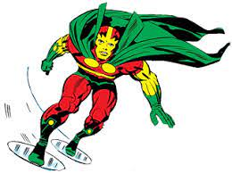

Mister Miracle (Scott Free) is a fictional superhero appearing in American comic books published by DC Comics. He first appeared in Mister Miracle #1 and was created by Jack Kirby. Mister Miracle has super power like superhuman strength, agility, speed, coordination and reflexes, along with incredible stamina.
